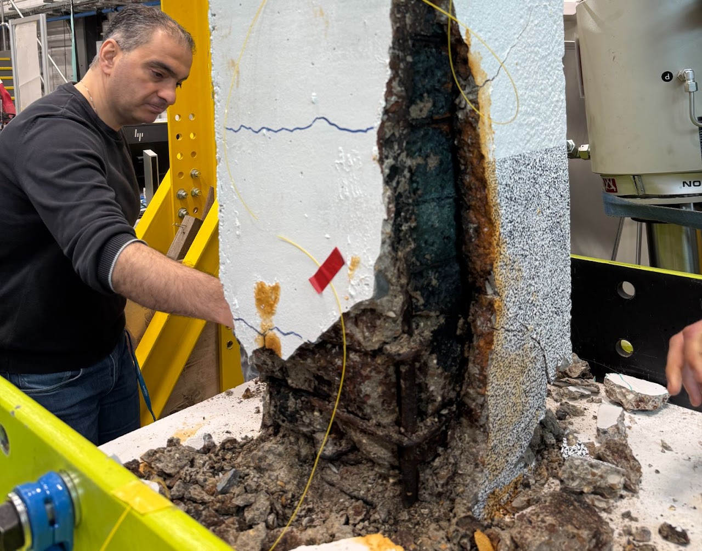
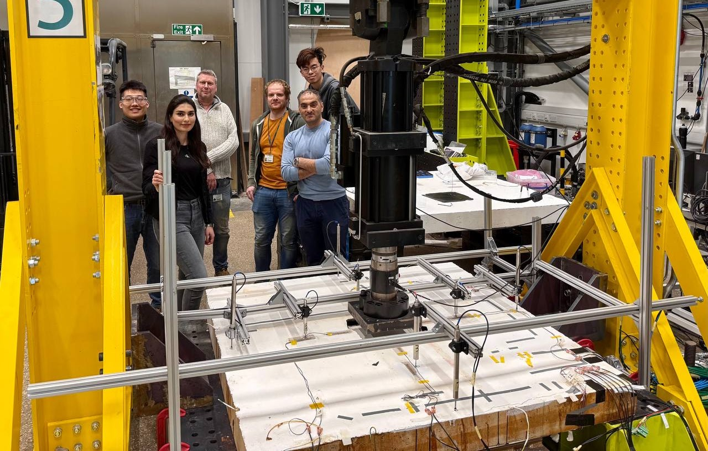
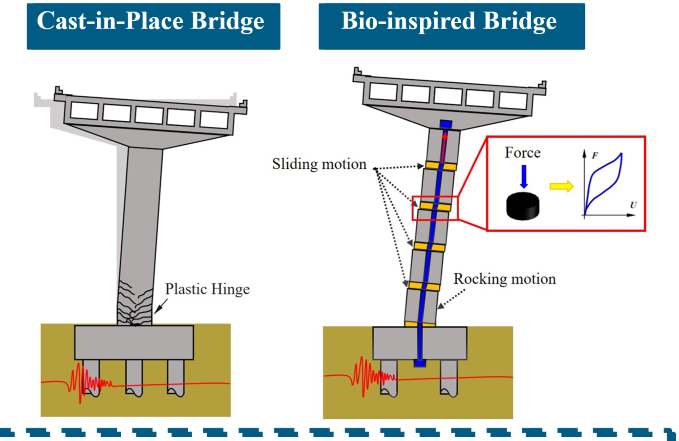
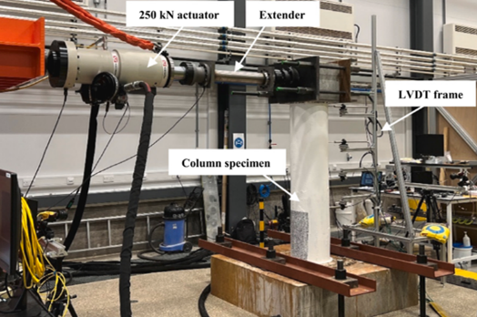

Research
Eight projects spanning corrosion, seismic performance, sustainable materials and railway infrastructure resilience.

Assessing how increasing heavy-axle-weight freight loading affects the future load-carrying capacity of the UK’s ageing metallic railway bridges.
Prof William Powrie · Dr Ziliang Zhang · Saba Ghassemi

Studying how corrosion and smooth (plain, undeformed) reinforcement bars influence the nonlinear cyclic behaviour of reinforced concrete columns.
Saeid Ekraminia · Caitlin Finn · Harry Nickells · Sophie Jackson

Investigating how climate-driven hydro-mechanical processes affect the long-term stability of railway earthworks and embankments.

Using distributed fibre-optic sensing to experimentally investigate how corrosion affects the structural performance of reinforced concrete slabs.

Developing resilience-based design approaches for composite segmental bridges built with low-carbon materials.

Exploring next-generation approaches to sustainable, resilient bridge design and construction methods.

Characterising the static, dynamic and seismic performance of nonuniformly corroded concrete bridge columns reinforced with carbon or stainless steel.
Dr Mehdi Kashani · Hamed Aminulai · Dr Ziliang Zhang

Structural design, capacity assessment and independent verification across four major Elizabeth Line station packages, led by Dr Kashani while at AECOM.